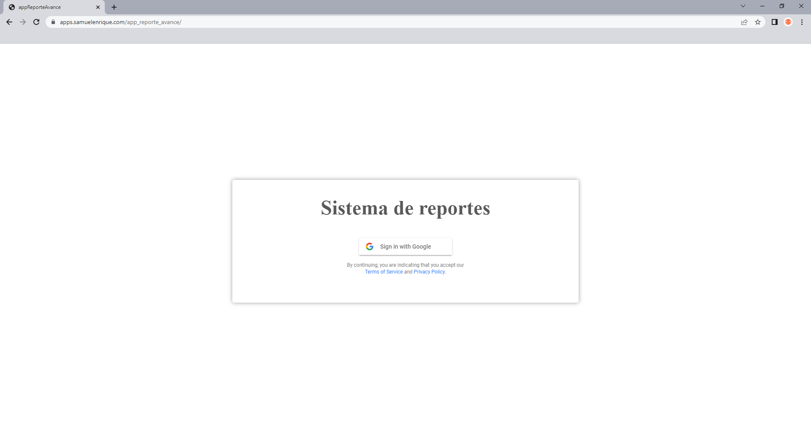
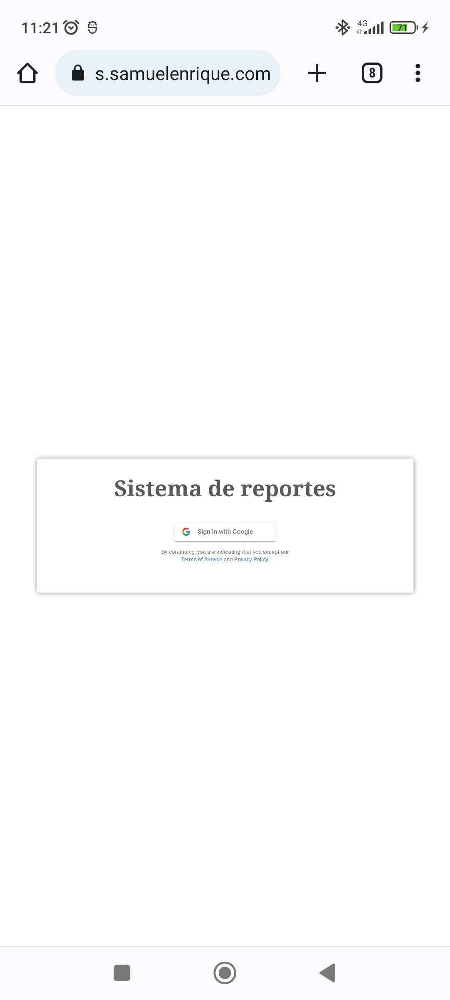
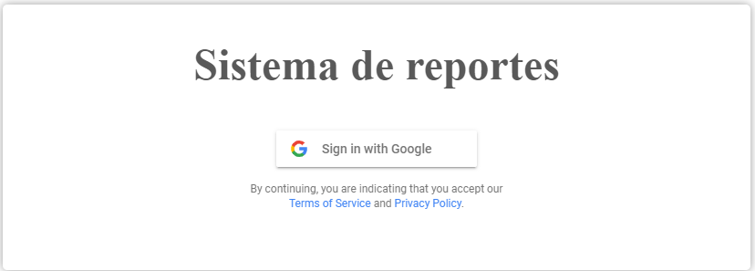
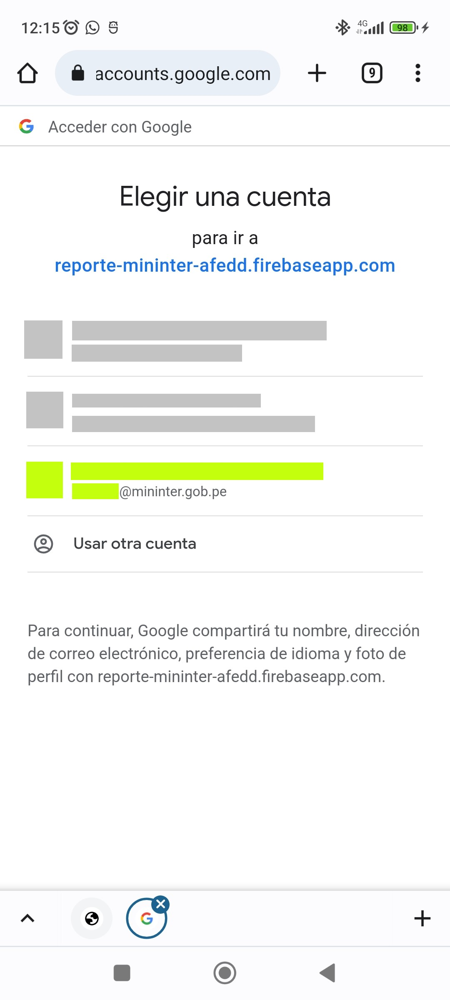
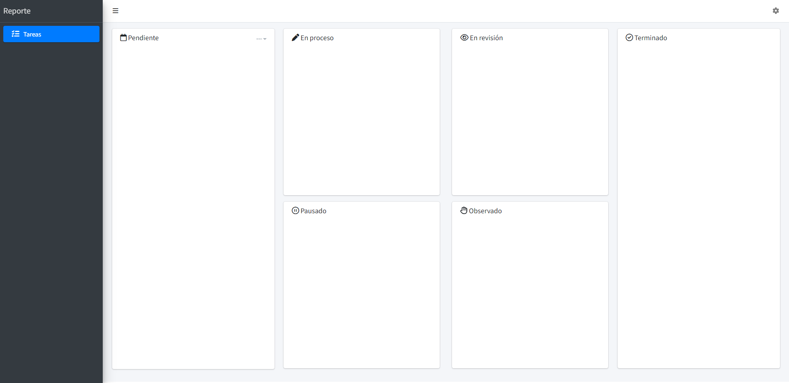

1 Acceso
El aplicativo se accede vía web. Esto significa que puede accederse en teléfonos, PCs, laptops o cualquier dispositivo que cuente con un navegador.
Para iniciar sesión en el aplicativo se debe acceder al siguiente enlace: https://apps.samuelenrique.com/app_reporte_avance.
1.1 Pantalla de inicio
Después de unos segundos de carga, obtendremos una pantalla de inicio de sesión. Desde una computadora, esta pantalla luce así:

Dependiendo del dispositivo desde el que ingresemos, la distribución de los elementos puede variar. Por ejemplo, desde un teléfono la vista es diferente.

1.2 Inicio de sesión
Para el acceso, se debe presionar en el botón que indica “Sign in with Google”1.

El sistema hará uso de la cuenta Google que tenga sesión iniciada en el navegador. En caso de que no haya ninguna cuenta con sesión iniciada, aparecerá una ventana flotante en la que se podrá elegir una cuenta para el inicio de sesión. Debe seleccionarse el correo mininter.

En caso no aparezca listado el correo mininter, debe seleccionarse “Usar otra cuenta” e iniciar sesión con las mismas credenciales que se usan para acceder al correo mininter.
Después de unos segundos de carga se puede visualizar la siguiente pantalla:

Si el usuario ya cuenta con tareas asignadas, se mostrarán en la pantalla. La cantidad y colores de las tareas asignadas varía según el rol que el usuario tenga en su equipo.
En caso de que el navegador se encuentre con traducción al español, el texto dirá “Inicia sesión con Google”.↩︎